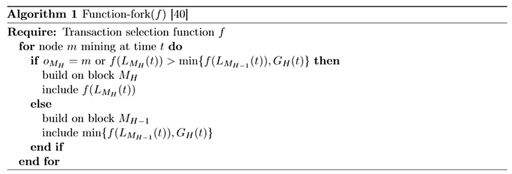

7.3 Transaction Fees（交易费用）
Another class of incentives known as transaction fees are drawn from users’ transactions and awarded to nodes who process that node’s transactions. This can include both the block proposer and/or validator. A primary question in cryptocurrencies is how to choose transaction fees. A common approach—used in Bitcoin and Ethereum, for example—is to allow users to propose their own fees for each transaction. In such a system, miners are incentivized to prioritize high-fee transactions when forming blocks; the higher the transaction fee, the lower the confirmation delay. Most cryptocurrencies also set a minimum transaction fee to prevent users spamming the network with transactions. Two important questions characterize the selection of transaction fees. The first is how to choose the magnitude of transaction fees; namely, should fees be proposed by users, imposed by the system, or some combination thereof? Typical considerations include scaling fees with the transaction’s bytesize, monetary value, or both. The second question is how to allocate fees once they are collected. Recent work has shown that naive (and very common) methods of allocating fees can lead to incentive-incompatibility as well as increased confirmation latency. We begin this section by presenting an industry-standard approach to fee management in Section 7.3.1, and discussing why such an approach is unacceptable for a low-latency payment system. Next, we discuss alternatives, and highlight their advantages and disadvantages 7.3.2.
另一种激励措施被称为交易费用，这来自于用户的交易，并被奖励给处理该节点交易事务的节点。这可能同时包含了出块者和验证者，或者只是二者之一。加密货币的一个首要问题就是如何选择交易费用。例如，比特币和以太坊中使用的一种常见方法是允许用户为每笔交易提出自己的费用。在这种系统中，当产生区块时，鼓励矿工优先处理高收费交易；交易费用越高，确认延迟越低。大多数加密货币还设置了最低交易费用，以防止用户向网络发送垃圾交易。交易费用的选择有两个重要的问题。第一个问题就是如何选择交易费用的量级；也就是说，费用是由用户提出，由系统强制执行，或者是他们的某种组合？典型的考虑因素包括按照交易尺寸，币值或者两者来缩放费用。第二个问题是如何在收集费用后分配费用。 最近的工作表明，分配费用的方法太过于单纯（和非常常见）可能导致激励不兼容以及增加的确认延迟。我们在小节7.3.1中提出了一种行业标准的费用管理方法开始本节，并讨论为什么这种方法对于低延迟的支付系统是不可接受的。接下来，我们讨论替代方案，并在小节7.3.2中突出其优缺点。
7.3.1 Fee management today（当今的费用管理方法）
Most existing cryptocurrencies allow users to set their own fees; validators choose whether to process a given transaction based on whether the offered transaction fee is high enough. If a miner (or proposer) includes a transaction in a block, that node reaps the full transaction fee as a reward. If a given transaction is not included in a block by any miner after some period of time, that same transaction can be re-broadcast with a higher fee. Although Bitcoin and Ethereum place lower bounds on the size of transaction fees, in practice, users tend to choose substantially higher transaction fees. This natural approach to fee selection is widely adopted, but it has three important negative repercussions: high congestion, high fees, and incentive incompatibility. We begin by describing each of these repercussions more precisely.
大多数现存的加密货币都允许用户自己设定交易费用；验证者根据给出的交易费用是否足够高来选择是否处理一个指定的交易。如果矿工（或者出块者）将一个交易打包到区块中，那个节点收获全部的交易费用作为奖励。如果一个指定的交易在一段时间以后还没有被任何一个矿工打包到区块中去，那么同一个交易可以用更高的费用被重新广播。虽然比特币和以太坊在交易费用的大小上设置了下限，但在实践中，用户实质上倾向于选择更高的交易费用。这种自然的费用选择方法被广泛采用，但它有三个重要的负面影响：高拥堵、高费用和激励不相容。首先我们更准确地描述一下这些后果。
Congestion \(\quad\) Current fee systems contribute critically to congestion. Intuitively, this happens because current mechanisms incentivize validators to choose which transactions to confirm based on transaction fees; this in turn forces users to pay to bypass congestion at equilibrium. To make this statement precise, consider a simplified system in which new blocks are produced as a Poisson process of rate \(µ\), each of which can contain up to \(K\) transactions. Transactions arrive in the system at rate \(λ\), and each transaction offers a transaction fee \(b\), chosen by the user. Let \(c\) denote the (random) cost per unit time of delaying a transaction’s confirmation, with \(c \sim F[0, \overline{c}]\), where \(\overline{c}\) is a positive constant. So if a single transaction’s confirmation is delayed by time \(\Delta\), a delay cost of \(c \Delta\) is incurred. Here \(F(\cdot)\) denotes a cdf with density \(f(\cdot)\) and tail probability \(\overline{F}(c) := 1 - F(c)\).The congestion in the system \(ρ\) is defined as \(\rho := \frac {\lambda} {\mu K}\). Let \(W_K (ρ)\) denote the expected transaction confirmation delay in a system (in blocks) with block size \(K\) and congestion \(ρ\), \(R_K (ρ)\) the total revenue per unit time raised from users, and \(D_K (ρ)\) the total delay cost incurred per unit time. Consider the following result by Huberman et al.:
拥 堵 \(\quad\) 目前的收费系统是引起拥堵的很重要的原因。直观来讲，发生这样的情况是因为现在的机制鼓励验证者可以根据交易费用的大小去选择要确认哪一笔交易；这相应地就会强迫用户在平衡状态时要为了绕过拥堵而支付成本。为了使这个描述更加的准确，考虑这样一个简单的系统，其中新区块的产生是一个速率为 \(μ\) 的泊松过程，每一个区块可以容纳多达 \(K\) 笔交易。交易以 \(λ\) 的速度到达系统，每笔交易提供的交易费是 \(b\)，这是由用户选择的。用 \(c\) 表示单位时间延迟交易确认的（随机）成本，而 \(c \sim F[0, \overline{c}]\)，其中 \(\overline{c}\)为正常数。因此，如果单笔交易的延迟时间是 \(\Delta\)，则会产生 \(c \Delta\) 的延迟成本。这里的 \(F(\cdot)\) 代表一个密度为 \(f(\cdot)\)、尾部概率为 \(\overline{F}(c) := 1 - F(c)\) 的累积分布函数（CDF）。系统的密集度 \(ρ\) 定义为：\(\rho := \frac {\lambda} {\mu K}\) 。我们用 \(W_K (ρ)\) 表示一个区块容量为 \(K\)、密集度为 \(ρ\) 的系统中的预期交易确认延迟，\(R_K (ρ)\) 表示单位时间从用户处获得的总收益，\(D_K (ρ)\) 表示单位时间产生的总延迟成本。以下是Gur Huberman等人的一些结论：
Theorem 3 ([94]). \(\quad\) At equilibrium, if \(ρ = 0\), both revenue and delay cost are \(0\). For all \(ρ \in (0,1)\),
定 理 \(3\) ([94]) \(\quad\) 在均衡条件下，如果密集度 \(ρ = 0\)，收益和延迟成本都是 \(0\)。对于所有的 \(ρ \in (0,1)\)。
\begin{equation} \begin{aligned} R_{K}^{\prime}(\rho) &=K \rho \int_{0}^{\overline{c}} \overline{F}(c)^{2} W_{K}^{\prime}(\rho \overline{F}(c)) d c>0, \\ D_{K}^{\prime}(\rho) &=\frac{R_{K}(\rho)+D_{K}(\rho)}{\rho}>0. \end{aligned} \end{equation}
In other words, both revenue (and with it infrastructure provision by miners) and delay cost are strictly increasing in \(ρ\).
换言之，收益（连带矿工提供的基础设施）和延迟成本是随着密集度 \(ρ\) 而严格递增的。
- A primary, troubling repercussion of this result is that congestion is not merely a side effect of technical scalability challenges. Rather, it is fundamental; validators are not incentivized to work without congestion. As stated in [94]:
An implication of [Theorem 3] is that congestion and delays are necessary for the system to function. Low congestion ρ leads to low delay costs, as blocks are rarely full and each transaction is likely to be processed in the next block. But when blocks are rarely full users have little incentive to pay transaction fees to gain priority, and the system raises little revenue. Without sufficient revenue the number of miners…can become too small, making the system unreliable.
- 这一结果的一个主要的、令人忧虑的影响是，拥堵不仅仅是技术可扩展性挑战的副作用。相反，它是十分重要的；在没有拥堵的情况下，验证者就没有工作的动力。如[94]所述：
-
【定理3】的一个含义是系统的运行需要一定的拥堵和延迟。低密集度 \(ρ\) 导致低延迟成本，因为区块很少是满的，每个交易可能在下一个块中处理。但是，当数据区块很少是满的时，用户很少有动力支付交易费用以获得优先权，而系统也很少增加收入。如果没有足够的收入，矿工的数量…可能会变得太小，使系统不可靠。
This instability among miners under low congestion conditions is discussed more carefully when we consider incentive compatibility. We want to highlight that although [94] was written for the PoW setting, their results are not specific to PoW. Rather, they stem from the combination of three factors: (1) blocks are produced at a constant rate with a limited block size, (2) different transactions give miners (proposers) different reward amounts, and (3) miners get to choose which transactions to include in each block. If a similar fee mechanism were adopted in a PoS system, the same effects would emerge, due to the fact that block times are lower bounded (by protocol and/or by physical constraints). This fundamental relation between congestion and user-selected fees is problematic in a high-throughput payment system.
在我们考虑激励相容性时，更仔细地讨论了低拥堵条件下矿工之间的不稳定性。我们要强调的是，尽管 [94] 是为PoW设置编写的，但它们的结果并不是只特定于PoW。相反，它们是由三个因素组合而成的：（1）区块以固定的速度生产，且区块大小有限；（2）不同的交易给矿工（出块者）不同的奖励金额；（3）矿工可以选择在每个区块中包含哪些交易。如果在一个POS系统中采用类似的收费机制，同样的效果也会出现，因为事实上PoS系统里区块时间的限制较低（受协议和/或物理约束）。在高吞吐量支付系统中，拥堵与用户选择费用之间的这种基本关系是有问题的。
High fees \(\quad\) Another substantial problem with the current fee structure is that fees can be unbounded. Consider the following result from Huberman et al., which considers the same model from the prior discussion on congestion:
高手续费 \(\quad\) 当前的费用结构的另一个实质性问题是费用可以不受限制。考虑Huberman等人得出的以下结果，该结果考虑了之前关于拥堵的讨论得出的相同模型：
Theorem 4 ([94]). \(\quad\) At equilibrium, transaction fees coincide with the payments that result from selling priority of service in a Vickrey-Clark-Groves (VCG) auction.
定理4（[94]） \(\quad\) 在均衡状态下，交易费用与维克里（VCG）拍卖中为销售优先服务支付费用是一个道理。
A well-known property of VCG auctions is that participants are incentivized to bid an amount equal to the externality they impose upon others. This may not be problematic on average, but these amounts can become artificially inflated due to social factors, world events, random fluctuations in system load, etc. Indeed, in December of 2017, Bitcoin fees exceeded $20 per transaction [92]. This volatility and unboundedness is explicitly at odds with the requirements of a payment system. Merchant adoption hinges critically on the guarantee that fees will not grow beyond a maximum threshold; this point has been touted as a primary reason why cryptocurrencies can never replace fiat money [164].
VCG拍卖的一个众所周知的特点是，参与者被激励出价，其金额等于他们强加给其他人的外部效应。平均而言，这可能没有问题，但由于社会因素、世界事件、系统负载的随机波动等原因，这些金额可能会被人为膨胀。事实上，2017年12月，比特币收费一度超过每笔交易20美元[92]。这种波动性和不确定性显然与支付系统的要求不符。商家的采用主要取决于保证费用不会超过最大阈值；这一点已经被吹捧为加密货币永远无法取代法币的主要原因[164]。
A key observation is that whereas congestion arises mainly because of the way fees are disbursed, high or volatile fees result from a combination of two factors: first, fees are proposed by users. Second, validators receive higher rewards for transactions with higher fees, and choose which transactions to include. It is this combination that leads to the VCG result, which in turn leads to unpredictable fees. Hence, any solution to this problem should tackle both factors; it is not enough to simply change the way that fees are disbursed.
一个关键的注意点是，鉴于拥堵主要是因为交易费的支付方式造成的，高或不稳定的费用是由两个因素的综合造成的结果：第一，费用是由用户提出的；第二，验证者可以从收费较高的交易中获得更高的奖励，并可以选择要打包哪些交易。正是这两者的结合导致了 VCG 的结果，从而导致了不可预测的费用。因此，任何解决这个问题的方法都应该同时解决这两个因素；仅仅改变费用的支付方式是不够的。
Incentive incompatibility \(\quad\) A third critical repercussion of the current approach to transaction fee management is incentive incompatibility. In particular, in underutilized systems, it can introduce undesirable equilibria in terms of proposal strategies. Carlsten et al. show that in the absence of inflation, rational Bitcoin miners are no longer incentivized to mine on the longest chain [40]. The intuition is that if miners are only collecting transaction fees, then they are incentivized to include as many transactions as possible in each block. This means that right after a block is mined, the number of transactions available for inclusion in the next block is minimal, as is the associated reward. Thus, when choosing between forks, miners are incentivized to adopt one with fewer transactions in the final block, since such forks leave more transaction fees for the next miner. By exploiting this observation, selfish miners can convince other miners to build on side chains.
激励不相容 \(\quad\) 当前的交易费用管理方法的第三个重要影响是激励不相容。特别是，在未充分利用的系统中，它可以在提案策略方面引起一些不需要的平衡。Carlsten等人表明在没有通货膨胀的情况下，理性的比特币矿工不再被激励到最长链上挖矿[40]。直觉地，如果矿工只收取交易费用，那么他们会被激励在每个区块中尽可能多地打包交易。这意味着在一个区块刚被挖出之后，可以包含在下一个块中的交易数量是最小的，相关的奖励也是最小的。因此，当在不同的分叉之间进行选择时，矿工被鼓励采用最终区块中交易费用较少的分叉，因为此类分叉会为下一个矿工留下更多的交易费用。通过利用这种言论，自私挖矿者可以说服其他矿工建立侧链。
More precisely, [40] shows the existence of equilibria that do not involve honest mining. Their model is as follows: consider a constant stream of incoming transactions. For any time interval \(\mathcal {T} = [t_1,t_2]\), let \(g(\mathcal {T}) = t_2 - t_1\) denote the fees accumulated by the transactions in interval \(\mathcal {T}\) (i.e. one unit of fees per unit time). Notice that the model considers transactions as continuous quantities that can be infinitesimally split between miners. Because of the one-to-one correspondence between transaction times and associated fees, we will interchangeably allow \(\mathcal {T}\) to denote both a time interval and a set of transactions; the meaning should be clear from context. Suppose there is no network latency, and no limit on block size (equivalently, there are few enough transactions in the system that a miner can always include all outstanding transactions in the next block). For a block \(B\), let \(o_B\) denote the node that proposed block \(B\). A key assumption is that when a miner mines a block at time t on block \(B\), it can choose to include any subset \(\mathcal{T}^{\prime} \subseteq[0, t]\) of outstanding transactions in the new block, thereby collecting fees \(g(\mathcal{T}^{\prime}) = \left|\mathcal{T}^{\prime}\right|\). Let \(L_B (t)\) denote the amount of outstanding transactions in interval \([0,t]\), i.e., transactions that have not been claimed by \(B\) or its predecessors. For an amount of outstanding transactions \(L_B (t)\), suppose agents use function \(f(L_B (t))\) to determine how many transactions to consume in the next block. The authors also assume that if the chain has height \(H\), a miner will either build on the chain at height \(H+1\) or fork the last block, and build a conflicting block at height \(H\); let \(H_B\) denote the height of block \(B\). Let \(M_H\) denote the block at height \(H\) that leaves the most unclaimed transactions, i.e.,
更准确地说，[40]显示了存在一种不涉及诚实采矿的平衡。他们的模型如下：考虑一个持续的交易输入流。在任意的时间间隔 \(\mathcal {T} = [t_1,t_2]\) ，我们用 \(g(\mathcal {T}) = t_2 - t_1\) 表示在时间间隔 \(T\) 内的交易所累积的费用（即每单位时间收取一个单位的费用）。请注意，该模型将交易看作是可以在矿工之间进行无限小分割的连续数量。由于交易时间和相关费用之间的一对一对应关系，我们将允许 \(T\) 可互换地去表示一个时间间隔和一组交易；其含义应从上下文中明确。假设没有网络延迟，也没有对区块大小的限制（相当于，系统中的交易足够少，矿工总是可以在下一个区块中包含所有未完成的交易）。对于一个区块 \(B\)，我们用 \(o_B\) 来代表为区块 \(B\) 做提案的节点。一个关键的假设是，当一个矿工在时间t内从区块 \(B\) 上挖出一个块时，它可以选择在新的区块中包含任何未完成交易的子集 \(\mathcal{T}^{\prime} \subseteq[0, t]\)（即时间区间\([0,t]\)内的任何交易组），从而收取费用 \(g(\mathcal{T}^{\prime}) = \left|\mathcal{T}^{\prime}\right|\)。我们用 \(L_B (t)\) 来表示时间间隔 \([0,t]\) 内未完成交易的数量，也就是，还未被区块B或其父块广播的交易。对于大量未完成的交易 \(L_B (t)\)，假设代理使用函数 \(f(L_B (t))\) 来确定下一个区块中要消耗多少交易。作者还假设，如果链的高度为 \(H\)， 矿工要么在链高度 \(H+1\) 上建立新区块，要么分叉上一个区块，在高度\(H\) 建造一个争议区块；用\(H_B\) 来表示区块 \(B\) 的高度。用 \(M_H\) 来表示在块高度为 \(H\) 时留下最大未广播交易的那个区块，即：
\begin{equation} M_{H} = \arg \max_{B} \{L_{B}(t) : H_{B} = H \}. \end{equation}
（即 \(M_H\) 就是在区块高度 \(H_B=H\)、使得函数 \(L_B (t)\) 取得最大值的那个区块 \(B\)，区块 \(B\) 只是一个泛指的区块。）
Similarly, let \(G_H (t) = L_{M_{H-1}} (t) - L_{M_H} (t)\) denote the gap between the most unclaimed fees available at height \(H-1\) and the most unclaimed fees at height \(H\). [40] considers a class of strategies where each miner chooses (a) which block to build on, and (b) how many transactions to consume in their block. Algorithm 1 describes this procedure.
同样，我们用 \(G_H (t) = L_{M_{H-1}} (t) - L_{M_H} (t)\) 表示在块高度 \(H-1\) 的最大未广播费用与在高度 \(H\) 的最大未广播费用之间的差额。[40]考虑了一类策略，其中每个矿工选择（a）在哪个块上构建新块，以及（b）在其块中消耗多少交易。算法 \(1\) 正好描述了这个过程。

Theorem 5 ([40]). \(\quad\) For any constant \(y\) such that \(2 y - \ln (y) \geq 2\), define
定 理 5（[40]）. \(\quad\) 对于满足 \(2 y - \ln (y) \geq 2\) 的任意常数 \(y\)，定义：
\begin{equation} f(x) = \left \{ \begin{array}{ll}{x} & {\text { if } x \leq y} \\ {-W_{0} \left(-y e^{x-2 y}\right)} & {\text { if } x \in (y, 2 y-\ln (y)-1)} \\ {1} & {\text { else }}\end{array}\right. \quad \quad \quad \quad \quad \quad (7.24) \end{equation}
where \(W_0 (·)\) denotes the upper branch of the Lambert W function which satisfies \(W_0 (x e^x )=x\) for all \(x \in\left[-\frac{1}{e}, \infty\right)\). Then it is an equilibrium for every miner to mine with strategy Function-fork(\(f\)) (Algorithm 1) as long as every miner is non-atomic, and miners only mine on top of chains of length \(H\) or \(H − 1\), where \(H\) denotes the length of the longest chain in the system. Furthermore, in such an equilibrium, the expected number of unconfirmed transactions at time \(n \in \mathbb{R}\) scales as \(\Omega(\sqrt{n})\).
式中，\(W_0 (·)\) 表示 Lambert W 函数的上分支，对于所有的 \(x \in\left[-\frac{1}{e}, \infty\right)\)，它满足 \(W_0 (x e^x )=x\)。然后，使用fork函数\(f\)作为挖矿策略（算法1），这对于每一个矿工都是一种平衡，只要每个矿工都是非原子级的，并且矿工们只在链长度 \(H\) 或者 \(H-1\) 上挖矿，其中H代表系统中最长链的长度。此外，在这种均衡中，在时间 \(n \in \mathbb{R}\) 内，未确认交易的预期数量用 \(\Omega(\sqrt{n})\) 来衡量。
| Miner gets full \(\ \) transaction fees | Delcoupled rewards | |
|---|---|---|
User-selected \(\ \) fees |
Bitcoin [130] \(\ \) Ethereum [186] |
Cardano [101,100] \(\ \) Fruitchains [137] |
Algorithmic \(\ \) fees |
Table 7.1: Design space for transaction fee mechanisms. To the best of our knowledge, no blockchain systems today chooses transaction fees purely algorithmically. That being said, several cryptocurrencies impose algorithmic lower bounds on fees, but allow users to offer higher fees if desired (e.g., Bitcoin, Cardano, Ethereum). （表7.1：交易费用机制的设计空间。据我们所知，目前没有区块链系统纯粹是从算法上选择交易费用。也就是说，一些加密货币对费用施加算法下限，但允许用户根据需要提供更高的费用（如比特币、艾达币、以太坊）。）
This theorem suggests that Bitcoin is not stable when miners are incentivized only with transaction fees, whereas block rewards help stabilize the reward against temporal fluctuations in the transaction pool size. The \(\Theta(\sqrt{n})\) transaction backlog is problematic, and the strategic incentives are not just edge cases; the paper shows numerically that honest behavior is itself not a Nash equilibrium. Möser and Böhme observe related behavior in a longitudinal measurement of Bitcoin’s transaction history [129].
这一理论暗示，当只用交易费用来激励矿工时，比特币是不稳定的，而区块奖励有助于稳定挖矿回报来抵抗交易池规模的暂时性波动。\(\Theta(\sqrt{n})\) 的交易积压是成问题的，战略激励不仅仅是边缘案例，本文从数字上说明诚实行为本身不是纳什均衡。Möser 和 Böhme观察了比特币交易历史纵向测量中的相关行为[129]。
As with the results on congestion and fee volatility, this result is not specific to PoW. Rather, it results from miners deriving different rewards from different transactions, and hence being incentivized to process high-fee transactions. Broadly, there are two approaches for protecting against the challenges presented in [40]. The first is to ensure that there are always more transactions than there is space in each block: essentially, create congestion. This scenario is prevalent in Bitcoin today, which may help explain why these attacks have not been observed in the wild. However, our goal in adopting PoS is precisely to avoid congestion, especially as a means of network control. A second approach is to decouple block rewards from the transactions they process. We explore such options in the following section.
与拥堵和费用波动的结果一样，这一结果并不特定于PoW。相反，这是由于矿工可以从不同的交易中获得不同的回报，因此被鼓励去处理手续费高的交易。广泛来说，有两种方法来防止在[40]中所展现出来的挑战。第一就是确保在每一个区块中总是有更多的交易而不是空间：本质上来说，就是创造拥堵。这种情况普遍存在于今天的比特币中，这可能有助于解释为什么在野外没有观察到这些攻击。然而，我们采用PoS的目的恰好就是为了避免拥堵，特别是将其作为一种网络控制手段而言。第二种方法是将区块奖励和其处理的交易分离。我们将在下面的部分中探讨这一选项。
7.3.2 Design considerations（费用设计考虑）
The transaction fee structure for Unit-e has not been finalized. We are particularly interested in two main design choices: (1) whether fees are chosen algorithmically or selected by users, and (2) how transaction fees are disseminated to users. This design space is summarized in Table 7.1, along with a partial listing of current cryptocurrencies in each operating point. In this section, we will describe each of the quadrants in Table 7.1 along with the corresponding tradeoffs.
Unit-E的交易费用结构尚未定稿。我们对两个设计选择特别感兴趣：（1）手续费是根据算法选择还是由用户选择；（2）如何向用户分发交易费用。在表7.1中总结了这种设计空间，以及当前的加密货币在各自操作点上的一些列举。在本节中，我们叙述表7.1的每个象限，以及相应的权衡。
7.3.2.1 User-selected fees, miner gets full transaction fees（用户选择的费用，矿工获得全额交易费用）
This operating point is by far the most popular today, being used in Bitcoin, Ethereum, Monero, and others. We discussed the drawbacks of this approach in detail in Section 7.3.1. To summarize, there are three main problems with this approach: (1) it incentivizes miners to create congestion, (2) transaction fees are unbounded, and (3) it is susceptible to strategic behavior. Because of these problems, which have been well-documented both theoretically and in practice, we do not view this operating point as viable for Unit-e.
这个操作点是目前为止最流行的，被用于比特币、以太坊、门罗币等。我们在第7.3.1节中详细讨论了这种方法的缺点。综上所述，该方法存在三个主要问题：（1）激励矿工制造拥堵；（2）交易费用没有限制；（3）易受战略行为的影响。由于这些问题在理论上和实践上都有充分论证，我们不认为这个操作点对于Unit-e来说是切实可行的。
7.3.2.2 User-selected fees, decoupled rewards（用户选择的费用，奖励分离）
Many of the problems from Section 7.3.1 arise because miners can substantially alter their transaction fee rewards by changing which transactions they include in each block. One way to address this problem is by decoupling the transaction fees in a given block from the reward collected by the block miner. If miners cannot significantly alter their rewards by optimizing the transactions in blocks, they are less incentivized to prioritize certain transactions over others.
第7.3.1节中的许多问题都是产生于因为矿工可以通过改变每个区块中要包含哪些交易来本质上改变其交易费用奖励。解决这个问题的一种方法是将给定区块中的交易费用与挖出块的矿工收取的奖励进行分离。如果矿工不能通过优化区块中的交易来显著改变其奖励，那么他们就没有动力去优先处理某些交易。
This operating point is not widely used in live cryptocurrencies, with the exception of Cardano [100]. Nonetheless, the idea of (partially) decoupling a transaction’s fee from the miner of the block containing that transaction has been explored in several works, including inclusive blockchains [113], Fruitchains [137], and Ouroboros [101]. Many of the papers studying this idea are designed for the PoW setting. The basic idea is that the miner of a block does not necessarily reap all the transaction fees in that block, but shares them with other miners who have also contributed to network security and validation. There are many ways to implement such a directive; one explicit mechanism is proposed in Fruitchains, where transaction fees are split evenly over a sequence of consecutive blocks. A key property that Fruitchains exhibit is fairness, defined below.
除艾达币[100]外，此操作点在现存的加密货币中并未被广泛使用。尽管如此，将交易费用和打包该交易的区块的矿工进行分离（部分地）的想法已在若干工作中得到探讨，包括一些普适区块链[113]、水果链[137]和Ouroboros [101]。许多研究这个想法的论文都是为PoW设置而设计的。基本思想就是，一个区块的矿工不一定要获得该区块中的所有交易费用，而是与其他矿工共享这些费用，因为其他矿工也为网络安全和验证做出了贡献。实现这种方针的方法有很多种；在水果链中提出了一种明确的机制，即在一系列连续的块上均匀地划分交易费用。水果链展示的一个关键特性就是公平，定义如下。
Definition 7.3.1 ([137]). \(\quad\) Consider a Byzantine adversary that controls at most fraction \(β\) of compute power (stake); the remaining compute power (stake) is controlled by an honest party. A blockchain protocol is \(δ\)-approximately fair if there exists a time duration \(T_0\) such that for all \(T \geq T_{0}\), in the view of each honest player, the honest party is guaranteed to obtain at least fraction \((1−δ)(1−β)\) of blocks with overwhelming probability in every time window of duration \(T\).
定义7.3.1([137]). \(\quad\) 想象一个拜占庭的对手，他最多能控制的算力（权益）比例为 \(β\)；剩下的算力（权益）由一个诚实派控制。如果存在一个时间持续期 \(T_0\) 满足所有的 \(T \geq T_{0}\)，在每一个诚实参与者看来，诚实派保证在持续期 \(T\) 内的每一个时间窗口都具有压倒性的概率获得至少 \((1−δ)(1−β)\) 比例的区块，这样的区块链协议是接近 \(δ\) 公平的。
Fairness is closely related to our notion of equitability from Section 7.2.3. A key difference is that equitability only makes sense for random processes with fixed mean over time (i.e., processes that are stationary up to order 1), whereas fairness encompasses general non-stationary stochastic processes.
公平性与我们在第7.2.3节中提出的均衡性概念密切相关。一个关键的区别是，均衡性只对平均数随着时间固定的随机过程（即达到1阶的平稳过程）的才有意义，而公平性则包括了一般的非平稳随机过程。
Fruitchains proposes a mechanism where by instead of directly including transactions in blocks, miners mine a “fruit” for each transaction [137]. When a transaction first appears in the system, miners start solving a proof-of-work puzzle specific to that transaction, with a different hardness parameter from the main blockchain. This proof-of-work puzzle must include a pointer to a recent block within the previous \(T(κ)\) blocks, where κ is a security parameter, and \(T(κ)\) is a (pre-specified) polynomial function of the security parameter. A solution to this puzzle, concatenated with the puzzle itself, is called a fruit, and gets broadcast to the network. Regular block miners include fruits in their blocks, rather than plaintext transactions. Fruitchains satisfy the following key property:
水果链提出了一种机制，矿工不再将交易直接包含在区块中，而是在每个交易中去开采“fruit”[137]。当一个交易首次出现在系统中时，矿工们开始去解决一个特定于该交易的工作量证明难题，这个难度参数与主链是不同的。这个工作量证明难题必须包括一个指向先前的 \(T(k)\) 个区块中最近一个块的指针，其中k是一个安全参数，\(T(k)\) 是关于安全参数的（预先指定的）多项式函数。这个难题的一个解决方案，与难题本身连接在一起，被称为“水果（fruit）”，并被广播到网络。常规的区块矿工在他们的区块中包含水果，而不是纯文本的交易。水果链满足以下关键属性：
Theorem 6 (Fairness, [137]). \(\quad\) For any constant \(0<\delta<1\), there exists a constant \(\mathrm{T}_{0} = \Theta \left(\frac {1} {\delta} \right)\) such that the Fruitchains protocol is \(\delta\)-approximately fair with respect to an adversary that controls at most \(β\) fraction of the computational power.
定理6（公平性，[137]） \(\quad\) 对于任何常数 \(0<\delta<1\)，存在一个常数 \(\mathrm{T}_{0} = \Theta \left(\frac {1} {\delta} \right)\)，满足水果链协议对于在对手最多控制β比例的算力时是接近 \(\delta\) 公平的。
Notice that fairness holds even without considering incentive mechanisms. To obtain incentive-compatibility, Fruitchains makes a key design decision, which is to distribute rewards (block rewards and transaction fees) evenly to the \(T(k)\) block miners preceding each block. Suppose that within any stretch of \(T(k)\) transactions, the total reward from transaction fees and block rewards is \(V\). We say that honest mining is a \(\beta^{*}\)-coalition-safe \(\gamma\)-Nash equilibrium if, with overwhelming probability, no coalition of \(\beta<\beta^{*}\) can gain more than a multiplicative factor \((1 + \gamma)\) utility, regardless of the transactions being processed. Under this reward allocation scheme, Fruitchains satisfies the following property:
要注意，即使不考虑激励机制，公平也是成立的。为了获得激励相容性，水果链做出了一个关键的设计决策，即把奖励（区块奖励和交易费用）平均分配给每个区块之前的区块 \(T(k)\) 的矿工。假设在 \(T(k)\) 个交易的任何一个延伸范围内，交易费用和区块奖励合起来的总回报为 \(V\)。不考虑正在处理的交易，如果不存在小于 \(\beta^{*}\) 的联盟 \(\beta\) 能够以压倒性的概率获得超过一个乘法因子 (1 + γ) 的效用，那么我们认为诚实挖矿是一个 \(\beta^{*}\) 联盟安全的 \(\gamma\) 纳什均衡。根据该奖励分配方案，水果链满足以下特性：
Remark 7.3.2 ([137]). \(\quad\) Consider a blockchain protocol that satisfies \(δ\)-approximate fairness with respect to \(β\) attackers. If rewards are allocated to the \(T(k)\) block miners preceding each block (including the block itself), honest behavior is a \(β\)-coalition-safe, \(3δ\)-Nash equilibrium.
论述 7.3.2 ([137]) \(\quad\) 考虑一个区块链协议要满足在拥有 \(β\) 攻击者时接近 \(δ\) 公平。如果奖励在每个区块之前（包括这个区块本身）被分配给区块 \(T(k)\) 的矿工，诚实行为就是一个 \(β\) 联盟安全的、\(3δ\) 纳什均衡。
This remark is straightforward to derive. Fairness implies that within each stretch of \(T(κ)\) blocks, the fraction of adversarial blocks is upper bounded by \(\beta (1 + \delta)\), so the adversary’s reward is upper bounded by \(\beta (1 + \delta) V\). By fairness, if the adversary had followed the honest protocol, it would be guaranteed to reap a reward of at least \((1 - \delta) \beta V\). Hence the adversary gains a factor of at most
\begin{equation} \frac {(1 + \delta)} {(1 - \delta)} \leq 1 + 3\delta \end{equation}
in rewards for \(\delta<\frac{1}{3}\). Notice that this result depends on two key components: first, the underlying blockchain protocol should be fair. Second, the reward allocation scheme should split rewards evenly among miners. By adopting a version of Fruitchains adapted to PoS (e.g., as proposed in Snow White [52] or Ouroboros [101]), we can obtain analogous results.
这个论述很容易得出。公平意味着在 \(T(κ)\) 个区块的每一个延伸之内，敌对区块的比例上限是 \(\beta (1 + \delta)\)，所以对手的奖励上限是 \(\beta (1 + \delta) V\) 。公平地说，如果对手遵循诚实的协议，将保证会获得至少 \((1 - \delta) \beta V\) 的奖励。因此对手最多可获得的奖励与以下乘数因子相关：
\begin{equation} \frac {(1 + \delta)} {(1 - \delta)} \leq 1 + 3\delta \end{equation}
其中 \(\delta<\frac{1}{3}\)。要注意，这一结果取决于两个关键组成部分：首先，底层区块链协议应该是公平的。其次，奖励分配方案应该在矿工之间平均地分割奖励。通过采用一个适合于PoS的水果链版本（例如，如Snow White [52]或Ouroboros [101]中所述），我们可以获得类似的结果。
There is a key downside to sharing transaction fees across a sequence of block proposers, while also allowing users to propose their own fees. Since miners do not collect all the transaction fees from a block, they are less incentivized to include transactions with higher fees first; this means that users have a much weaker incentive to propose fees above the minimum. A key question that must be answered is whether such a system can raise enough transaction fee revenue to pay for network security. At the moment, there is no research quantifying this question (as far as we know).
通过区块提案者的顺序去均分交易费用，同时也允许用户提出自己的费用，这有一个关键的缺陷。因为没有从一个区块中收取所有的交易费用，因此他们没有动力去优先打包更高费用的交易；这意味着，用户提出高于最低水平的费用的动机就要弱得多了。这样就必须要回答一个关键的问题，这样的一个系统是否能够筹集足够的交易费用收入来为网络安全买单呢？目前，还没有研究对这个问题进行量化（据我们所知）。
7.3.2.3 Algorithmic fees, miner gets full transaction fees（基于算法收费，矿工获得全额交易费）
A third operating point is that transaction fees could be chosen purely algorithmically, but miners would still reap the full transaction fees of each block they mine. To the best of our knowledge, there are no cryptocurrencies or papers advocating for this approach. Nonetheless, there are related workflows in existing systems. For instance, the Bitcoin Core wallet has a slider that allows the user to choose a desired processing speed; the wallet then algorithmically chooses a fee based on the blockchain’s historical processing rates as a function of fees. Since the underlying blockchain is just Bitcoin, the miner that includes said transaction would reap the (algorithmically-chosen) fee.
第三个操作点是，交易费用可以通过纯粹的算法来选择，但是矿工们仍然可以获得他们挖出的每个区块的全部交易费用。据我们所知，还没有任何加密货币或论文在提倡这种方法。尽管如此，在现有的系统中还是有相关的工作流。例如，比特币的核心钱包有一个滑动条，允许用户选择需要的处理速度；然后钱包根据区块链的历史处理费率，算法性地选择一个费用作为收费函数。由于底层区块链就是比特币，打包上述交易的矿工将获得（算法选择的）费用。
The previous example belies a key point: our reason for exploring algorithmic fees in the first place is to prevent users from paying higher fees to enable faster transaction processing. This is the key source of congestion, as described in Section 7.3.1. A relevant question, then, is how an algorithm might choose a transaction fee.
前一个例子证明了一个关键点：我们一开始就探讨基于算法收费的原因是为了避免用户支付更高的费用，以实现更快的交易处理。如第7.3.1节所述，这是拥堵的关键源头。那么，一个中肯的问题就是算法如何来选择交易费用呢？
Fundamentally, transaction fees pay for two properties: security and convenience. This cost can be broken down into the internal (computational and storage) cost of validating and storing transactions, and the external (communication, security) cost of coming to consensus with the rest of the network. Internal costs are primarily governed by transaction byte size; the larger the transaction, the more resources are required to store the transaction. External costs are more subtle to quantify. At first glance, these costs also seem to scale primarily with transaction byte size, since the consensus protocol does not explicitly differentiate between transactions and byte size determines communication cost. However, in practice, transaction value also plays an important role, for a few reasons.
从根本上讲，交易费用为两个属性买单：安全性和便利性。这个成本可以分解为验证和存储交易的内部（计算和存储）成本，以及与网络其他人达成共识的外部（通信、安全）成本。内部成本主要由交易尺寸的字节大小决定；交易尺寸越大，存储交易所需的资源就越多。外部成本要量化起来就更加微妙了。乍一看，这些成本似乎主要是用交易的字节大小来衡量，因为共识协议并没有明确区分交易和字节大小决定的通信成本。然而，在实践中，交易价值也起着重要的作用，有这么几个原因。
Processing cost. \(\quad\) High-value transactions require better security; they are more appealing targets, and therefore bear a higher standard for validation and finalization. Since it is common practice to wait longer before considering a high-value transaction as confirmed, the network implicitly expends more effort to confirm high-value transactions.4
Security. \(\quad\) Taking a more global view, transaction fees in aggregate fund the security of the network as a whole. Since higher-value payments increase the need for security, they should also bear a larger burden in terms of paying for that increased security. User-proposed fees do not satisfy this requirement, because they are only tied to transaction value through the user’s preferences.
Economic fairness. \(\quad\) Finally, existing payment networks (e.g., credit cards) typically set fees as a fixed percentage of transaction value. If Unit-e’s fees are lower than those of traditional payment systems, then it is capturing a surplus for users. In order to distribute that surplus fairly among users, transaction fees should similarly be set as a percentage of transaction value.
-
1.处理成本 \(\quad\) 高价值的交易需要更好的安全性；它们是更具吸引力的目标，因此要承担更高标准的验证和定稿。由于在将高价值交易视为已确认交易之前需要等待更长的时间是常见的做法，因此网络会隐性地花费更多的精力来确认高价值交易。
-
2.安全性 \(\quad\) 从更全局的角度来看，交易费用归结起来为整个网络的安全提供了资金。由于更高价值的支付增加了对安全的需求，就提高安全性所作的支付而言，他们也应该承担更大的责任。用户自主提议的收费满足不了这一要求，因为他们仅仅是通过用户的参数选择与交易价值挂钩的。
-
3. 经济公平 \(\quad\) 最终，现有的支付网络（如信用卡）通常是设定一个和交易价值固定百分比的费用。如果Unit-E的费用低于传统支付系统的费用，那么它将为用户夺得盈余。为了在用户之间公平地分配那些盈余利益，也应该类似地按照交易价值的百分比进行交易费用的设置。
These arguments collectively suggest that transaction fees should somehow scale with transaction value (not necessarily linearly). We therefore consider a fee mechanism that is programmatically determined. For each transaction, wallet software will evaluate a function \(w(·)\) that takes as inputs a number of features, including transaction value \(v\), transaction byte size \(b\), and possibly other parameters capturing the current level of network health \(h\). Including network health in the computation enables adaptive fees that respond to network conditions, such as congestion and/or gaps in security. Although we have not specified yet how w should be defined, it should satisfy a few basic properties:
这些论点共同表明，交易费用应该以某种方式与交易价值（不一定是线性的）成比例。因此，我们考虑一个由程序决定的收费机制。对于每笔交易，钱包软件将估算出一个函数 \(w(·)\)，该函数可视为在输入一些特征，包括交易价值 \(v\)、交易字节大小 \(b\)，也可能是捕获当前网络健康水平 \(h\) 的其他参数（译者注：即收费和 \(v、b、h\) 挂钩）。在计算中包含网络健康状况可以实现响应网络状况的自适应费用，例如拥堵和/或安全漏洞。虽然我们还没有详细说明如何定义 w，但它应该满足一些基本特性：
Boundedness: For all \(v, b, h \geq 0\),
-
有界性：对于所有的 \(v, b, h \geq 0\)，有：
\begin{equation} \underline{w} \leq w(v, b, h) \leq \overline{w} v \end{equation}
where \(\underline{w}\) is a hard-coded lower bound on the transaction fee, chosen to make spamming attacks costly. Similarly, \(\overline{w}\) is an upper bound on the fee rate, or the amount of fees per unit transaction value. We expect to choose \(\overline{w}\) based on merchant feedback.
即收费有上下边界。其中 \(\underline{w}\) 是交易费用的硬编码下限，选来作为进行垃圾邮件攻击的成本。同样，\(\overline{w}\) 是收费费率的上限，或者是单位交易价值的费用金额。我们希望根据商家反馈选择 \(\overline{w}\)。
Monotonicity (transaction value): For any \(v_{1} < v_{2}, b, \text { and } h\),
-
单调性（交易价值）：对于任何的 \(v_{1}、 v_{2}、b、h\)，其中\(v_{1} < v_{2}\)，有：
\begin{equation} w\left(v_{1}, b, h\right) \leq w\left(v_{2}, b, h\right) \end{equation}
即交易价值低的收费低。
Monotonicity (transaction byte size): For any \(b_{1}<b_{2}, v, \text { and } h\),
-
单调性（交易字节大小）：对于任何的 \(b_{1}、b_{2}、v、h\)，其中 \(b_{1}<b_{2}\)，有：
\begin{equation} w \left(v, b_{1}, h\right) \leq w \left(v, b_{2}, h\right) \end{equation}
即交易字节越大，收费越高。
Many functions satisfy these broad requirements, with different tradeoffs. Consider the operating point where miners reap the full transaction fees of each block they mine; intuitively, for a given function w, the weaker its dependency on transaction value, the less congestion we expect to see. This is because of the arguments in Section 7.3.1; congestion is caused by miners choosing which transactions appear in each block. At the same time, weakening this dependency degrades the system’s security properties. A key research question is to analyze the effects of different transaction fee functions on the congestion-security tradeoff.
许多函数可以通过不同的权衡来满足这些广泛的需求。考虑这样一个操作点，矿工获得他们挖到的每一个区块中的全部交易费用；直观地说，对于一个给定的函数 \(w\)，它对交易价值的依赖性越弱，我们期望看到的拥堵就越少。这是因为在第 7.3.1 节的讨论中说到，拥堵是由于矿工可以自主选择在每个区块中出现哪些交易所引起的。但是，削弱这种依赖性会降低系统的安全属性。一个关键的研究议题就是分析不同交易费用函数对于拥堵与安全之间的权衡所产生的影响。
In summary, the approach of choosing transaction fees purely algorithmically has some attractive properties; primarily, transaction fee rates would no longer be unbounded. However, the core problem of congestion remains. High-fee transactions will still be processed earlier, which promotes a hierarchy among transactions, and raises questions of fairness to users.
总之，纯粹通过算法选择交易费用的方法拥有一些引人注目的特性；首当其冲的就是，交易费率不再是没有边界的。然而，拥堵的核心问题仍然存在。高收费的交易仍然会被优先处理，这促使交易与交易之间有了层次等级，增加了用户之间公平性的问题。
7.3.2.4 Algorithmic fees, decoupled rewards.（基于算法收费，奖励分离）
The fourth operating point consists of choosing fees purely algorithmically, while also partially decoupling the allocation of transaction fees from the block(s) that included those transactions. This is the least well-understood among the four operating points, but it has some appealing properties. First, transaction fees can be bounded. Second, congestion can be reduced, by reducing the incentive for miners to strongly favor transactions with high fees. Third, unlike the operating point in Section 7.3.2.2 (user-selected fees, decoupled rewards), it does not matter that users are not incentivized to propose higher fees, since we can algorithmically choose fees that support network functionality. A key downside of this approach is complexity; analyzing the incentives of miners and the relation between the fee structure and network viability may be quite complicated if the transaction fee algorithm is complex. We view this as the main obstacle to this approach, and an important direction for future research and consideration in the transaction fee design of Unit-e.
第四个操作点包括纯算法地选择费用，同时也部分地将交易费用的分配与包含这些交易的区块分离。这是四个操作点中最不容易理解的，但它有一些吸引人的特性。首先，交易费用是有边界的。其次，通过削弱矿工偏爱高收费交易的激励，可以减少拥堵。再者，与第7.3.2.2节（用户自选费用、奖励分离）中的操作点不同，不鼓励用户提出更高的费用，但这并不重要，因为我们可以从算法上选择支持网络功能的费用。这种方法的一个主要缺点是复杂性；如果交易费用算法很复杂，分析矿工的激励机制以及费用结构与网络生存能力之间的关系可能会非常复杂。我们认为这是本方法的主要障碍，但也是未来研究的一个重要方向，同样是在设计Unit-e的交易费用时考虑的一个重要方向。